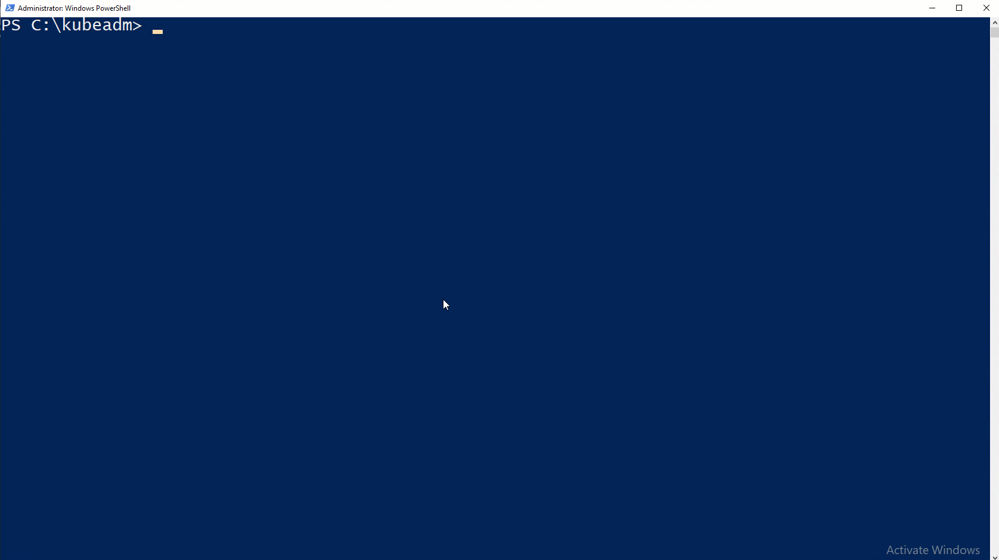

쿠버네티스에서 윈도우 노드 추가 가이드
쿠버네티스 플랫폼은 이제 리눅스와 윈도우 컨테이너 모두 운영할 수 있다. 윈도우 노드도 클러스터에 등록할 수 있다. 이 페이지에서는 어떻게 하나 또는 그 이상의 윈도우 노드를 클러스터에 등록할 수 있는지 보여준다.
목적
- 윈도우 노드를 클러스터에 등록하기
- 리눅스와 윈도우에서 동작하는 파드와 서비스가 상호 간에 통신할 수 있게 네트워크를 구성하기
시작하기 전에
윈도우 컨테이너를 호스트하는 윈도우 노드를 구성하려면 윈도우 서버 2019 라이선스를 소유해야 한다. 클러스터를 위해서 소속 기관의 라이선스를 사용하거나, Microsoft, 리셀러로 부터 취득할 수 있으며, GCP, AWS, Azure와 같은 주요 클라우드 제공자의 마켓플레이스를 통해 윈도우 서버를 운영하는 가상머신을 프로비저닝하여 취득할 수도 있다. 사용시간이 제한된 시험판도 활용 가능하다.
컨트롤 플레인에 접근할 수 있는 리눅스 기반의 쿠버네티스 클러스터를 구축한다.(몇 가지 예시는 kubeadm으로 단일 컨트롤플레인 클러스터 만들기, AKS Engine, GCE, AWS를 포함한다)
시작하기: 사용자 클러스터에 윈도우 노드 추가하기
IP 주소 체계 설계하기
쿠버네티스 클러스터 관리를 위해 실수로 네트워크 충돌을 일으키지 않도록 IP 주소에 대해 신중히 설계해야 한다. 이 가이드는 쿠버네티스 네트워킹 개념에 익숙하다 가정한다.
클러스터를 배포하려면 다음 주소 공간이 필요하다.
| 서브넷 / 주소 범위 | 비고 | 기본값 |
|---|---|---|
| 서비스 서브넷 | 라우트 불가한 순수한 가상 서브넷으로 네트워크 토플로지에 관계없이 파드에서 서비스로 단일화된 접근을 제공하기 위해 사용한다. 서비스 서브넷은 노드에서 실행 중인 kube-proxy에 의해서 라우팅 가능한 주소 공간으로(또는 반대로) 번역된다. |
10.96.0.0/12 |
| 클러스터 서브넷 | 클러스터 내에 모든 파드에 사용되는 글로벌 서브넷이다. 각 노드에는 파드가 사용하기 위한 /24 보다 작거나 같은 서브넷을 할당한다. 서브넷은 클러스터 내에 모든 파드를 수용할 수 있을 정도로 충분히 큰 값이어야 한다. *최소 서브넷*의 크기를 계산하려면: (노드의 개수) + (노드의 개수 * 구성하려는 노드 당 최대 파드 개수). 예: 노드 당 100개 파드인 5 노드짜리 클러스터 = (5) + (5 * 100) = 505. |
10.244.0.0/16 |
| 쿠버네티스 DNS 서비스 IP | DNS 확인 및 클러스터 서비스 검색에 사용되는 서비스인 kube-dns의 IP 주소이다. |
10.96.0.10 |
클러스터에 IP 주소를 얼마나 할당해야 할지 결정하기 위해 ‘쿠버네티스에서 윈도우 컨테이너: 지원되는 기능: 네트워킹’에서 소개한 네트워킹 선택 사항을 검토하자.
윈도우에서 실행되는 구성 요소
쿠버네티스 컨트롤 플레인이 리눅스 노드에서 운영되는 반면, 다음 요소는 윈도우 노드에서 구성되고 운영된다.
- kubelet
- kube-proxy
- kubectl (선택적)
- 컨테이너 런타임
v1.14 이후의 최신 바이너리를 https://github.com/kubernetes/kubernetes/releases에서 받아온다. kubeadm, kubectl, kubelet, kube-proxy의 Windows-amd64 바이너리는 CHANGELOG 링크에서 찾아볼 수 있다.
네트워크 구성
리눅스 기반의 쿠버네티스 컨트롤 플레인(“마스터”) 노드를 가지고 있다면 네트워킹 솔루션을 선택할 준비가 된 것이다. 이 가이드는 단순화를 위해 VXLAN 방식의 플라넬(Flannel)을 사용하여 설명한다.
리눅스 컨트롤 플레인에서 VXLAN 방식으로 플라넬 구성하기
플라넬을 위해 쿠버네티스 마스터를 준비한다.
클러스터의 쿠버네티스 마스터에서 사소한 준비를 권장한다. 플라넬을 사용할 때에 iptables 체인으로 IPv4 트래픽을 브릿지할 수 있게 하는 것은 추천한다. 이는 다음 커맨드를 이용하여 수행할 수 있다.
sudo sysctl net.bridge.bridge-nf-call-iptables=1플라넬 다운로드 받고 구성하기
가장 최신의 플라넬 메니페스트를 다운로드한다.
wget https://raw.githubusercontent.com/coreos/flannel/master/Documentation/kube-flannel.ymlVXLAN 네트워킹 벡엔드를 가능하게 하기 위해 수정할 곳은 두 곳이다.
아래 단계를 적용하면
kube-flannel.yml의net-conf.json부분을 다음과 같게 된다.net-conf.json: | { "Network": "10.244.0.0/16", "Backend": { "Type": "vxlan", "VNI" : 4096, "Port": 4789 } }참고: 리눅스의 플라넬과 윈도우의 플라넬이 상호운용하기 위해서VNI는 반드시 4096이고,Port는 4789여야 한다. 다른 VNI는 곧 지원될 예정이다. VXLAN 문서에서 이 필드의 설명 부분을 보자.kube-flannel.yml의net-conf.json부분을 거듭 확인하자.- 클러스터 서브넷(예, “10.244.0.0/16”)은 IP 주소 설계에 따라 설정되어야 한다.
- VNI 4096 은 벡엔드에 설정한다.
- Port 4789 는 벡엔드에 설정한다.
kube-flannel.yml의cni-conf.json부분에서 네트워크 이름을vxlan0로 바꾼다.
cni-conf.json는 다음과 같다.cni-conf.json: | { "name": "vxlan0", "plugins": [ { "type": "flannel", "delegate": { "hairpinMode": true, "isDefaultGateway": true } }, { "type": "portmap", "capabilities": { "portMappings": true } } ] }- 클러스터 서브넷(예, “10.244.0.0/16”)은 IP 주소 설계에 따라 설정되어야 한다.
플라넬 매니페스트를 적용하고 확인하기
플라넬 구성을 적용하자.
kubectl apply -f kube-flannel.yml몇 분 뒤에 플라넬 파드 네트워크가 배포되었다면, 모든 파드에서 운영 중인 것을 확인할 수 있다.
kubectl get pods --all-namespaces결과는 다음과 같다.
NAMESPACE NAME READY STATUS RESTARTS AGE kube-system etcd-flannel-master 1/1 Running 0 1m kube-system kube-apiserver-flannel-master 1/1 Running 0 1m kube-system kube-controller-manager-flannel-master 1/1 Running 0 1m kube-system kube-dns-86f4d74b45-hcx8x 3/3 Running 0 12m kube-system kube-flannel-ds-54954 1/1 Running 0 1m kube-system kube-proxy-Zjlxz 1/1 Running 0 1m kube-system kube-scheduler-flannel-master 1/1 Running 0 1m플라넬 데몬셋에 노드 셀렉터가 적용되었음을 확인한다.
kubectl get ds -n kube-system결과는 다음과 같다. 노드 셀렉터
beta.kubernetes.io/os=linux가 적용되었다.NAME DESIRED CURRENT READY UP-TO-DATE AVAILABLE NODE SELECTOR AGE kube-flannel-ds 2 2 2 2 2 beta.kubernetes.io/arch=amd64,beta.kubernetes.io/os=linux 21d kube-proxy 2 2 2 2 2 beta.kubernetes.io/os=linux 26d
윈도우 워커 노드 추가하기
이번 단원은 맨 땅에서부터 온프레미스 클러스터에 가입하기까지 윈도우 노드 구성을 다룬다. 클러스터가 클라우드상에 있다면, 퍼블릭 클라우드 제공자 단원에 있는 클라우드에 특정한 가이드를 따르도록 된다.
윈도우 노드 준비하기
참고: 윈도우 단원에서 모든 코드 부분은 윈도우 워커 노드에서 높은 권한(Administrator)으로 파워쉘(PowerShell) 환경에서 구동한다.
설치 및 참여(join) 스크립트가 포함된 SIG Windows tools 리포지터리를 내려받는다.
[Net.ServicePointManager]::SecurityProtocol = [Net.SecurityProtocolType]::Tls12 Start-BitsTransfer https://github.com/kubernetes-sigs/sig-windows-tools/archive/master.zip tar -xvf .\master.zip --strip-components 3 sig-windows-tools-master/kubeadm/v1.15.0/* Remove-Item .\master.zip쿠버네티스 구성 파일을 커스터마이즈한다.
{ "Cri" : { // Contains values for container runtime and base container setup "Name" : "dockerd", // Container runtime name "Images" : { "Pause" : "mcr.microsoft.com/k8s/core/pause:1.2.0", // Infrastructure container image "Nanoserver" : "mcr.microsoft.com/windows/nanoserver:1809", // Base Nanoserver container image "ServerCore" : "mcr.microsoft.com/windows/servercore:ltsc2019" // Base ServerCore container image } }, "Cni" : { // Contains values for networking executables "Name" : "flannel", // Name of network fabric "Source" : [{ // Contains array of objects containing values for network daemon(s) "Name" : "flanneld", // Name of network daemon "Url" : "https://github.com/coreos/flannel/releases/download/v0.11.0/flanneld.exe" // Direct URL pointing to network daemon executable } ], "Plugin" : { // Contains values for CNI network plugin "Name": "vxlan" // Backend network mechanism to use: ["vxlan" | "bridge"] }, "InterfaceName" : "Ethernet" // Designated network interface name on Windows node to use as container network }, "Kubernetes" : { // Contains values for Kubernetes node binaries "Source" : { // Contains values for Kubernetes node binaries "Release" : "1.15.0", // Version of Kubernetes node binaries "Url" : "https://dl.k8s.io/v1.15.0/kubernetes-node-windows-amd64.tar.gz" // Direct URL pointing to Kubernetes node binaries tarball }, "ControlPlane" : { // Contains values associated with Kubernetes control-plane ("Master") node "IpAddress" : "kubemasterIP", // IP address of control-plane ("Master") node "Username" : "localadmin", // Username on control-plane ("Master") node with remote SSH access "KubeadmToken" : "token", // Kubeadm bootstrap token "KubeadmCAHash" : "discovery-token-ca-cert-hash" // Kubeadm CA key hash }, "KubeProxy" : { // Contains values for Kubernetes network proxy configuration "Gates" : "WinOverlay=true" // Comma-separated key-value pairs passed to kube-proxy feature gate flag }, "Network" : { // Contains values for IP ranges in CIDR notation for Kubernetes networking "ServiceCidr" : "10.96.0.0/12", // Service IP subnet used by Services in CIDR notation "ClusterCidr" : "10.244.0.0/16" // Cluster IP subnet used by Pods in CIDR notation } }, "Install" : { // Contains values and configurations for Windows node installation "Destination" : "C:\\ProgramData\\Kubernetes" // Absolute DOS path where Kubernetes will be installed on the Windows node } }
참고: 사용자는 쿠버네티스 컨트롤 플레인(“마스터”) 노드에서kubeadm token create --print-join-command를 실행해서ControlPlane.KubeadmToken과ControlPlane.KubeadmCAHash필드를 위한 값을 생성할 수 있다.
- 컨테이너와 쿠버네티스를 설치 (시스템 재시작 필요)
기존에 내려받은 KubeCluster.ps1 스크립트를 사용해서 쿠버네티스를 윈도우 서버 컨테이너 호스트에 설치한다.
.\KubeCluster.ps1 -ConfigFile .\Kubeclustervxlan.json -install 이 때 -ConfigFile는 쿠버네티스 구성 파일의 경로를 가리킨다.

대상으로 하는 윈도우 노드에서, 본 단계는
- 윈도우 서버 컨테이너 역할을 활성화(및 재시작) 한다.
- 선택된 컨테이너 런타임을 내려받아 설치한다.
- 필요한 컨테이너 이미지를 모두 내려받는다.
- 쿠버네티스 바이너리를 내려받아서
$PATH환경 변수에 추가한다. - 쿠버네티스 구성 파일에서 선택한 내용을 기반으로 CNI 플러그인을 내려받는다.
(선택적으로) 참여(join) 중에 컨트롤 플레인(“마스터”) 노드에 접속하기 위한 새로운 SSH 키를 생성한다.
참고: 또한, SSH 키 생성 단계에서 생성된 공개 SSH 키를 (리눅스) 컨트롤 플레인 노드의authorized_keys파일에 추가해야 한다. 이는 한 번만 수행하면 된다. 스크립트가 출력물의 마지막 부분에 이를 따라 할 수 있도록 단계를 출력해 준다.
일단 설치가 완료되면, 생성된 모든 구성 파일이나 바이너리는 윈도우 노드가 참여하기 전에 수정될 수 있다.
윈도우 노드를 쿠버네티스 클러스터에 참여시키기
이 섹션에서는 클러스터를 구성하기 위해서 쿠버네티스가 설치된 윈도우 노드를 기존의 (리눅스) 컨트롤 플레인에 참여시키는 방법을 다룬다.
앞서 내려받은 KubeCluster.ps1 스크립트를 사용해서 윈도우 노드를 클러스터에 참여시킨다.
.\KubeCluster.ps1 -ConfigFile .\Kubeclustervxlan.json -join 이 때 -ConfigFile 쿠버네티스 구성 파일의 경로를 가리킨다.
참고: 어떤 이유에서든 부트스트랩 동안이나 참여 과정에서 스크립트가 실패하면, 뒤따르는 참여 시도를 시작하기 전에 신규 PowerShell 세션을 시작해야한다.
본 단계는 다음의 행위를 수행한다.
- 컨트롤 플레인(“마스터”) 노드에 SSH로 접속해서 Kubeconfig 파일을 얻어온다.
- kubelet을 윈도우 서비스로 등록한다.
- CNI 네트워크 플러그인을 구성한다.
- 선택된 네트워크 인터페이스 상에서 HNS 네트워크를 생성한다.
참고: 이는 vSwitch가 생성되는 동안 몇 초간의 네트워크 순단현상을 야기할 수 있다.
- (vxlan 플러그인을 선택한 경우) 오버레이 트래픽을 위해서 인바운드(inbound) 방화벽의 UDP 포트 4789를 열어준다.
- flanneld를 윈도우 서비스로 등록한다.
- kube-proxy를 윈도우 서비스로 등록한다.
이제 클러스터에서 다음의 명령을 실행해서 윈도우 노드를 볼 수 있다.
kubectl get nodes윈도우 노드를 쿠버네티스 클러스터에서 제거하기
이 섹션에서는 윈도우 노드를 쿠버네티스 클러스터에서 제거하는 방법을 다룬다.
앞서 내려받은 KubeCluster.ps1 스크립트를 사용해서 클러스터에서 윈도우 노드를 제거한다.
.\KubeCluster.ps1 -ConfigFile .\Kubeclustervxlan.json -reset 이 때 -ConfigFile 쿠버네티스 구성 파일의 경로를 가리킨다.

본 단계는 다음의 행위를 대상이되는 윈도우 노드에서 수행한다.
- 윈도우 노드를 쿠버네티스 클러스터에서 삭제한다.
- 구동 중인 모든 컨테이너를 중지시킨다.
- 모든 컨테이너 네트워킹(HNS) 자원을 삭제한다.
- 등록된 모든 쿠버네티스 서비스(flanneld, kubelet, kube-proxy)를 해지한다.
- 쿠버네티스 바이너리(kube-proxy.exe, kubelet.exe, flanneld.exe, kubeadm.exe)를 모두 삭제한다.
- CNI 네트워크 플러그인 바이너리를 모두 삭제한다.
- 쿠버네티스 클러스터에 접근하기 위한 Kubeconfig 파일을 삭제한다.
퍼블릭 클라우드 제공자
Azure
AKS-Engine은 완전하고, 맞춤 설정이 가능한 쿠버네티스 클러스터를 리눅스와 윈도우 노드에 배포할 수 있다. 단계별 안내가 GitHub에 있는 문서로 제공된다.
GCP
사용자가 GitHub에 있는 단계별 안내를 따라서 완전한 쿠버네티스 클러스터를 GCE 상에 쉽게 배포할 수 있다.
kubeadm과 클러스터 API로 배포하기
Kubeadm은 쿠버네티스 클러스터를 배포하는 사용자에게 산업 표준이 되었다. Kubeadm에서 윈도우 노드 지원은 쿠버네티스 v1.16 이후 부터 알파 기능이다. 또한 윈도우 노드가 올바르게 프로비저닝되도록 클러스터 API에 투자하고 있다. 보다 자세한 내용은, Windows KEP를 위한 kubeadm을 통해 상담하도록 하자.
다음 단계
이제 클러스터 내에 윈도우 컨테이너를 실행하도록 윈도우 워커를 구성했으니, 리눅스 컨테이너를 실행할 리눅스 노드를 1개 이상 추가할 수 있다. 이제 윈도우 컨테이너를 클러스터에 스케줄링할 준비가 됬다.
피드백
이 페이지가 도움이 되었나요?
피드백 감사합니다. 쿠버네티스 사용 방법에 대해서 구체적이고 답변 가능한 질문이 있다면, 다음 링크에서 질문하십시오. Stack Overflow. 원한다면 GitHub 리포지터리에 이슈를 열어서 문제 리포트 또는 개선 제안이 가능합니다..
최종 수정일시 March 26, 2020 at 10:58 PM PST , 다음 변경에 의해서:
Seventh Korean l10n Work For Release 1.17 (#19858) (페이지 변경 이력)